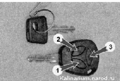
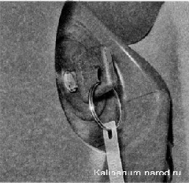
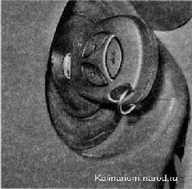

Автомобильная противоугонная система (иммобилайзер)Автомобиль оборудован щтатиой противоугонной системой (иммобилайзером) АПС-6 с пультом дистанционного управления. Система состоит из блока управления иммобилайзером, блока дистанционного управления, пульта дистанционного управления, совмещенного с ключом зажигания и транспондером (кодирующим устройством), а также датчиков незакрытых дверей и капота. Датчик незакрытого капота установлен на кронштейне перегородки моторного отсека. Датчики незакрытых дверей встроены в их замки. Датчик иммобилайзера встроен в выключатель (замок) зажигания, а контрольная лампа выполнена в щитке приборов. Автомобиль комплектуется двумя ключами: рабочим с пультом дистанционного управления и обучающим со вставкой красного цвета на торце (см. «Органы управления и контрольно-измерительные приборы»). После активации иммобилайзера обучающий ключ становится «своим» для блоков управления. Дополнительно можно закодировать второй рабочий ключ. Пульт диагностического оборудования работает только после активации иммобилайзера. Пульт дистанционного управления: 1 — кнопка блокировки замков дверей и включение охранной сигнализации; 2 — кнопка снятие автомобиля с охраны; 3 — кнопка открытия замка крышки багажного отделения Автомобиль оборудован электроприводом блокировки замков дверей (т. н. центральным замком). Приводы встроены в замки боковых дверей. Электропривод замка двери багажного отделения устанавливается только на часть автомобилей. При включении охранной сигнализации замки всех дверей автоматически блокируются. Автомобиль встает на охрану при однократном нажатии кнопки 1. При нажатии кнопки 2 отключается охранная сигнализация и отключается блокировка замка водительской двери. Для отключения блокировки замков пассажирских дверей необходимо повторно нажать кнопку 2. Активация ИММОБИЛАЙЗЕРА Активировать иммобилайзер можно, если ЭБУ системы управления не подвергался ранее процедуре активации иммобилайзера. Предупреждение Активацию необходимо выполнять только при закрытых дверях автомобиля. Последовательность выполнения 1. Вставляем обучающий ключ в выключатель (замок) зажигания. 2. Включаем зажигание. Если система не активирована, то через б с в щитке приборов загорится контрольная лампа иммобилайзера. После активации иммобилайзера лампа загораться не будет. 3. Выключаем зажигание. Контрольная лампа должна начать мигать с частотой 5 раз/с. В течение не более б с (пока мигает контрольная лампа) вынимаем обучающий ключ из выключателя (замка) зажигания и вставляем рабочий ключ. Включаем зажигание, при этом зуммер блока управления иммобилайзера должен подать три звуковых сигнала. Если звуковые сигналы не прозвучали и мигание контрольной лампы прекратилось, значит: - был превышен временной интервал (необходимо повторить активацию системы сначала); - рабочий ключ уже был обучен с другой системой; - противоугонная система неисправна. 4. Дождавшись еще два звуковых сигнала, (которые система подаст через 6 с после последнего сигнала), выключаем зажигание. Пока мигает контрольная лампа (в течение 6 с) извлекаем из замка рабочий ключ, вставляем в замок обучающий и вновь включаем зажигание. 5. После включения зажигания, зуммер блока управления иммобилайзера должен подать три звуковых сигнала. Дождавшись еще два звуковых сигнала, выключаем зажигание, не вынимая при этом ключ из замка. По истечении 6 с зуммер должен подать один звуковой сигнал, а контрольная лампа должна начать мигать с удвоенной частотой. Если звуковой сигнал не прозвучал, а контрольная лампа перестала мигать, необходимо повторить активацию системы сначала. Если повторно произошел сбой при выполнении, значит, ЭБУ был активирован с другим ключом. Для выполнения активации иммобилайзера необходимо заменить ЭБУ. 6. В течение 3 с после подачи последнего звукового сигнала включаем зажигание на 2—3 с. После включения зажигания система должна выдать три звуковых сигнала и выключить контрольную лампу. 7. Вынимаем обучающий ключ. 8. Выждав не менее 10 с, вставляем рабочий ключ и включаем зажигание: а) если по истечении б с контрольная лампа не замигала, производим пробный запуск двигателя. Двигатель должен запуститься; б) если контрольная лампа замигала, выключаем зажигание и ждем не менее 10 с. Включаем зажигание, сигнализатор не должен мигать и двигатель должен запуститься; в) если после включения зажигания но истечении 6 с загорается контрольная лампа постоянным светом, процедуру обучения необходимо повторить сначала. При неисправности ЭБУ или блока управления АПС для их замены требуется использовать новые «необученные» блоки, а процесс активации иммобилайзера выполнять «своим» обучающим ключом. |